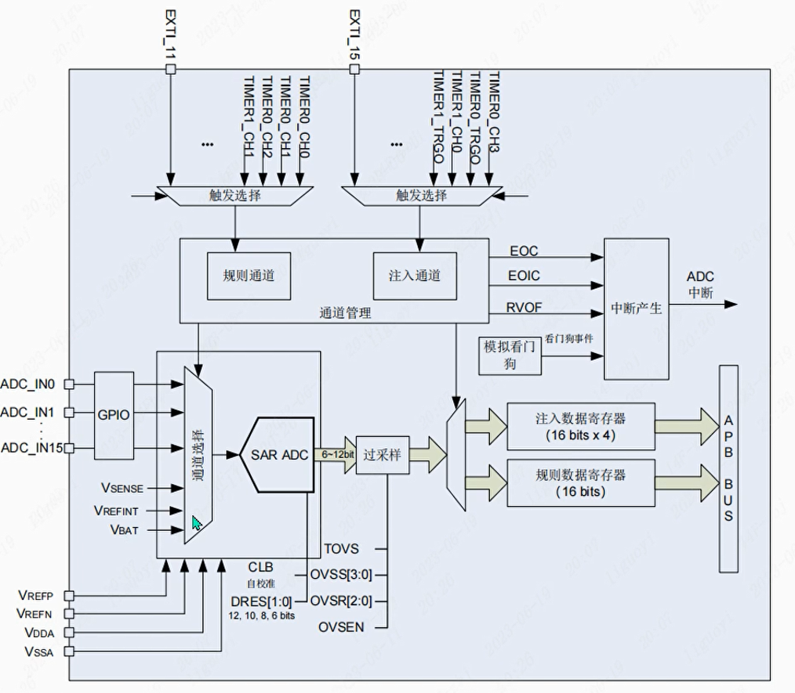
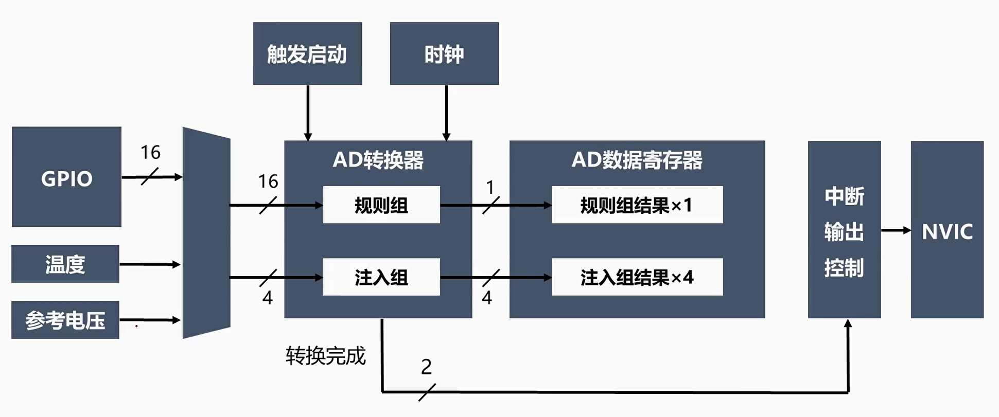
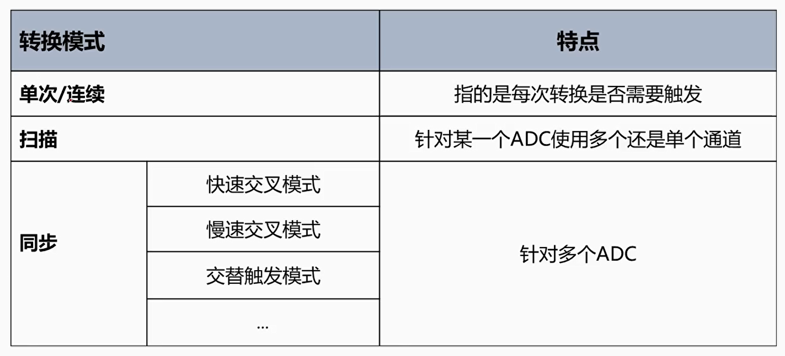
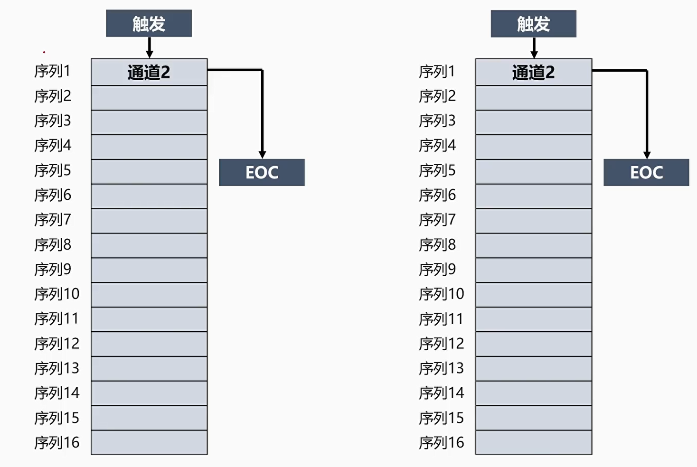
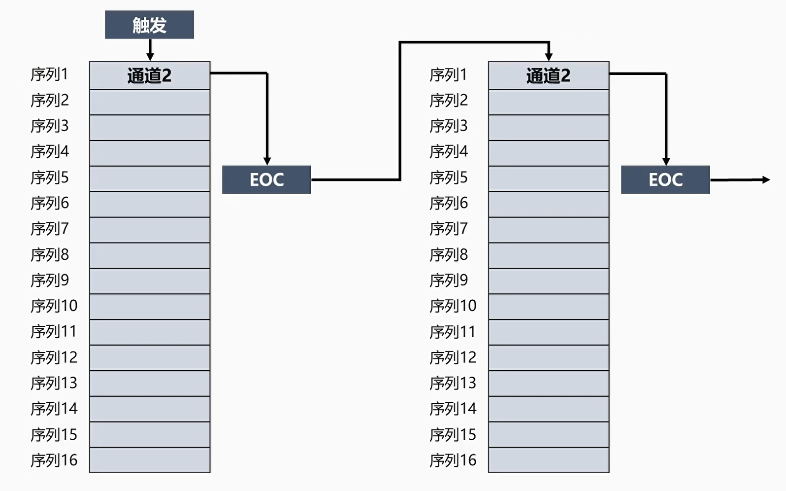
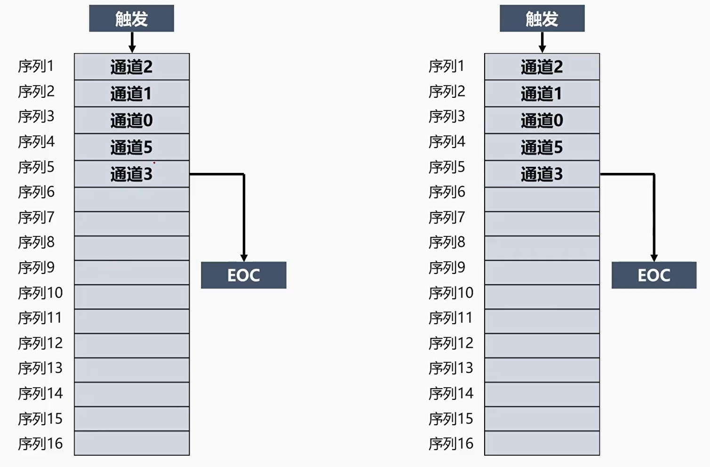
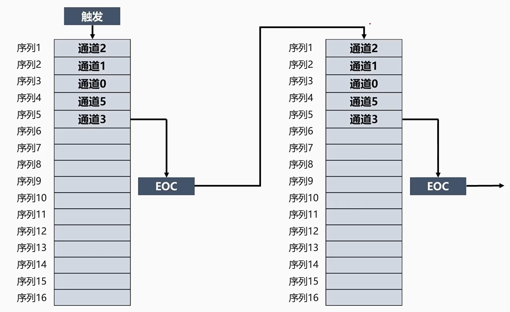
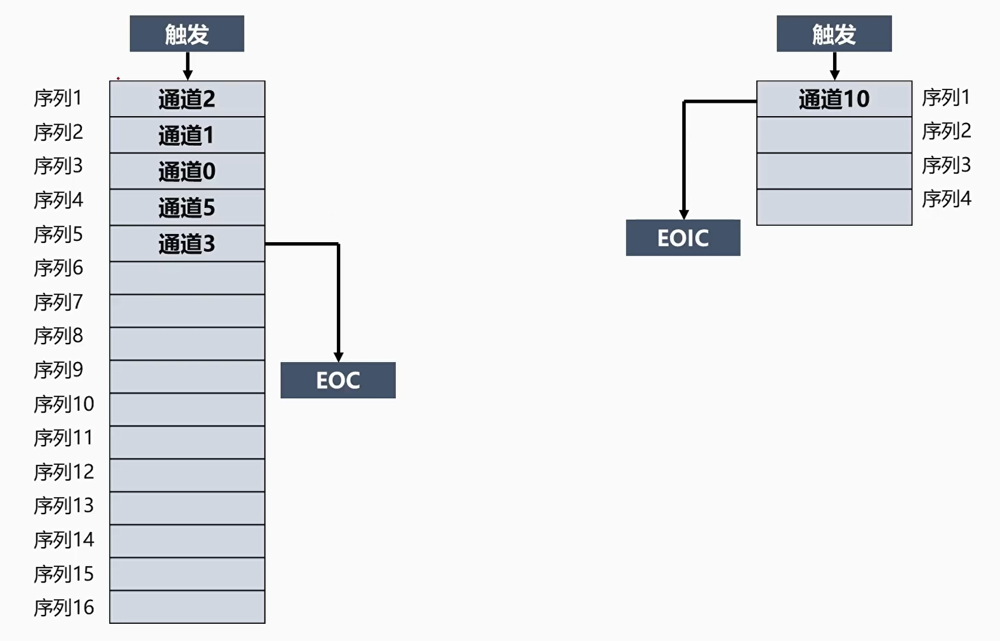
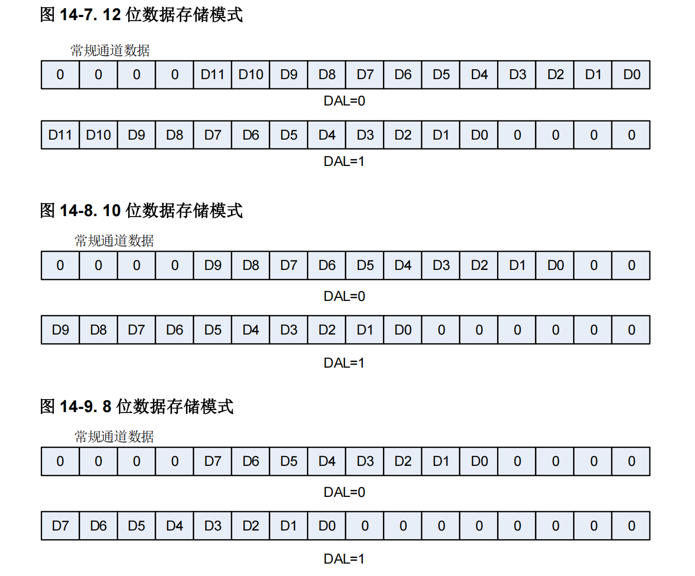

<!DOCTYPE lake>
<h1 data-lake-id="TLEEf" id="TLEEf"><span data-lake-id="u57357f50" id="u57357f50">ADC硬件结构</span></h1><h1 data-lake-id="WX0ZX" id="WX0ZX"></h1><p data-lake-id="ued85a7e7" id="ued85a7e7"><strong><span data-lake-id="u0cd1852e" id="u0cd1852e">内部结构简化框图</span></strong></p><p data-lake-id="ufa503843" id="ufa503843"></p><h1 data-lake-id="AfCSl" id="AfCSl"><span data-lake-id="u86f62320" id="u86f62320">ADC转换模式</span></h1><p data-lake-id="u9fbd853c" id="u9fbd853c"></p><h2 data-lake-id="gqimT" id="gqimT"><span data-lake-id="ua4bbc798" id="ua4bbc798">单次转换,非扫描模式</span></h2><p data-lake-id="ub7adb274" id="ub7adb274"></p><h2 data-lake-id="ur7sV" id="ur7sV"><span data-lake-id="u6a65953e" id="u6a65953e">连续转换,非扫描模式</span></h2><p data-lake-id="u2b921013" id="u2b921013"></p><h2 data-lake-id="dtz0s" id="dtz0s"><span data-lake-id="uff412dc3" id="uff412dc3">单次转换,扫描模式</span></h2><p data-lake-id="u17d1d370" id="u17d1d370"></p><h2 data-lake-id="hOfkm" id="hOfkm"><span data-lake-id="u0755a3e4" id="u0755a3e4">连续转换,扫描模式</span></h2><p data-lake-id="u66a42cbf" id="u66a42cbf"></p><h1 data-lake-id="d21dg" id="d21dg"><span data-lake-id="u159c2974" id="u159c2974">规则组和注入组</span></h1><p data-lake-id="u5ee241b7" id="u5ee241b7"></p><h1 data-lake-id="OLJEt" id="OLJEt"><span data-lake-id="u52a78d99" id="u52a78d99">ADC数据对齐</span></h1><p data-lake-id="u19bc2c17" id="u19bc2c17"></p><h1 data-lake-id="VthVL" id="VthVL"><span data-lake-id="u271eca71" id="u271eca71">ADC转换时间</span></h1><p data-lake-id="u70b7e8d2" id="u70b7e8d2"><span class="lake-fontsize-12" data-lake-id="u4c74620a" id="u4c74620a" style="color: rgb(0,0,0)">总转换时间=采样时间+12 个 CK_ADC 周期</span></p><h1 data-lake-id="rKalJ" id="rKalJ"><span data-lake-id="u97ac6515" id="u97ac6515" style="color: rgb(0,0,0)">ADC内部校准</span></h1><p data-lake-id="u546f90e4" id="u546f90e4"><span class="lake-fontsize-12" data-lake-id="u9ba4a693" id="u9ba4a693">ADC有一个内置自校准模式,可以大幅减少因内部电容组的变化而造成的精准度误差。</span></p><blockquote data-lake-id="u7779eca6" id="u7779eca6"><p data-lake-id="u5bb39add" id="u5bb39add"><span class="lake-fontsize-12" data-lake-id="u9d743c8e" id="u9d743c8e">校准需要ADC使能之后延迟</span><span class="lake-fontsize-12" data-lake-id="u4510d4b3" id="u4510d4b3" style="color: rgb(0,0,0)">14个CK_ADC以等待ADC稳定</span></p></blockquote><h1 data-lake-id="VgfbI" id="VgfbI"><span data-lake-id="u407cddcf" id="u407cddcf">ADC实现步骤</span></h1><span class="yuque-card-unsupported">[codeblock]</span><p data-lake-id="ud887ba69" id="ud887ba69"><br/></p>